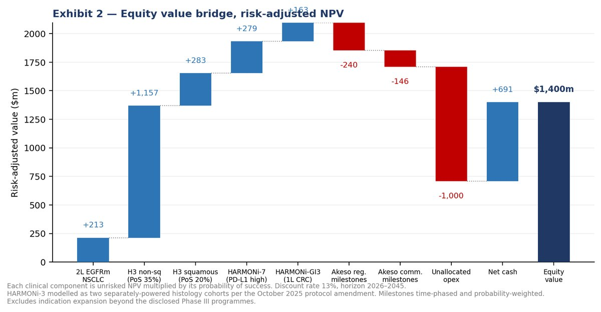

Summit Therapeutics (NASDAQ: SMMT)
Initiation of Coverage — Underweight
Disclosed-programme value $1.75/share · Share price ~$13.02 · Consensus target ~$28
Date: August 4, 2026 · Analyst: Chi Leong Andy Fu
Disclaimer. Academic research exercise, prepared for educational purposes. Not investment advice; I am not a licensed investment adviser. Assumptions are tagged [S] sourced, [D] derived, [J] judgment.
0. Where I stand relative to consensus
My model, built bottom-up from Summit's disclosed Phase III programmes, produces $1.75 per share. The stock closed at $13.02 on July 31, 2026 (market capitalisation roughly $10–12bn). Consensus is a Buy with an average twelve-month target near $28, median ~$33, ranging from a $9.95 low to $41 at the high end (Goldman Sachs), across roughly 10 buy / 5 hold / 2 sell [S]. Targets have been falling through 2026 — Stifel cut to $38 from $45, Guggenheim to $38 from $40.
A gap this large between a student model and fifteen covering analysts is far more likely to indicate a limitation in my framework than a market-wide error, and I am not going to present it as alpha.
So the $1.75 is not a price target. It is the answer to a narrower question: what are Summit's disclosed Phase III programmes worth on defensible assumptions? Everything above it is the premium investors pay for indication expansion that has not yet produced pivotal data — and that premium is the subject of this note.
Where I am most likely understating value, in order: peak market share; the number of indications credited; and probability of success, where consensus Buy ratings imply materially higher odds than my 20–35% cohort-level estimates.
1. What this company is, in plain terms
Summit Therapeutics owns rights to one drug. That is the entire company.
The drug is ivonescimab, an antibody engineered to block PD-1 — the checkpoint Merck's Keytruda targets — and VEGF, which tumours use to build blood vessels, simultaneously. Summit did not invent it. It licensed the molecule from Akeso, a Chinese biotech, for $500m upfront, and holds rights in the US, Canada, Europe, Japan, Latin America, the Middle East and Africa. Akeso kept China [S].
Summit has no revenue and no approved product in its territories. It holds $690.7m in cash against first-half operating cash use of $263.4m, and its filings carry explicit going-concern doubt [S]. Robert Duggan, co-CEO and Executive Chairman, holds a reported stake near 75%, which makes the true public float small and materially affects both short-interest interpretation and the company's ability to use its tax losses (Section 6.1) [S].
Three events matter:
- November 14, 2026 — FDA decision on ivonescimab in a narrow second-line lung cancer population. No advisory committee has been scheduled [S].
- Middle-to-back-end of 2026 — final progression-free survival from the squamous cohort of HARMONi-3, alongside a low-alpha interim survival look.
- First half of 2027 — an independent interim survival analysis and the non-squamous progression-free survival readout.
2. The finding: the market is not valuing a lung cancer drug
I built the disclosed Phase III programmes bottom-up and asked what assumptions would justify the share price.
No combination of lung cancer assumptions I can defend reaches it. Holding my inputs, the residual implies several billion dollars attributed to indications that have not produced pivotal data. Summit does have four sponsored Phase III programmes, and I build and credit all of them in Section 5. A large gap remains.
The bet embedded in this stock is that ivonescimab becomes a platform — that it repeats something like Keytruda's forty-plus labels. For scale: Keytruda and its subcutaneous form generated $31.7bn in FY2025, roughly 55% of Merck's pharmaceutical sales [S]. A credible claim on even a slice of that franchise is worth a great deal, which is why the premium exists.
My Underweight is a view that the premium is too rich to pay in advance. It is not a claim that the drug is worth a seventh of its price.
3. The clinical question
3.1 The single most important fact in this note
No PD-(L)1 x VEGF bispecific has ever demonstrated an overall survival benefit versus pembrolizumab [S].
This is the crux, and it is routinely blurred in coverage of the class. The wins that exist are against different comparators:
| Study | Comparator | Result |
|---|---|---|
| HARMONi (global, 2L EGFRm) | Placebo + chemo | OS HR 0.79, p=0.057 — missed |
| HARMONi-A (China, 2L EGFRm) | Chemo | OS HR ~0.74 — significant |
| HARMONi-2 (China, 1L PD-L1+) | Pembrolizumab | PFS HR 0.51 — but OS immature, no OS win |
| HARMONi-6 (China, 1L squamous) | Tislelizumab + chemo | OS HR 0.66 — significant, but not vs Keytruda |
HARMONi-6 is a genuine landmark — at ASCO 2026 and simultaneously in The Lancet, median OS 27.9 versus 23.7 months, HR 0.66 (95% CI 0.50–0.87), 24-month OS 64.7% versus 48.6% [S]. It is billed as the first regimen to beat an anti-PD-1 plus chemotherapy on survival in first-line NSCLC. But tislelizumab is not pembrolizumab, and China is not the United States.
HARMONi-3 is the trial designed to answer the Keytruda question. It has not answered it yet.
3.2 HARMONi-3 has already missed once
In approximately May 2026, the squamous cohort missed its interim progression-free survival threshold. Shares fell more than 25% [S]. The independent data monitoring committee recommended the study continue double-blind, having spent minimal alpha.
Current guidance from the Q2 2026 call [S]: - Squamous final PFS: middle-to-back-end of 2026, with a low-alpha interim survival look alongside - Independent interim survival analysis: 1H 2027 - Non-squamous PFS: 1H 2027
An October 2025 protocol amendment split the trial's statistical analysis by histology — roughly 600 squamous and 1,000 non-squamous patients, each separately powered [S]. This creates two independent failure modes, and one has already produced a negative interim signal.
HARMONi-3 is a binary catalyst, not a formality. Any note treating it as a near-certain win is not reading the record.
3.3 What HARMONi showed
HARMONi tested ivonescimab plus chemotherapy against placebo plus chemotherapy in EGFR-mutated non-squamous NSCLC after progression on a third-generation EGFR inhibitor, with dual primary endpoints [S].
Progression-free survival succeeded decisively: HR 0.52 (95% CI 0.41–0.66, p<0.0001), median 6.8 versus 4.4 months by independent review; investigator-assessed HR 0.58 [S].
Overall survival missed: HR 0.79 (95% CI 0.62–1.01, p=0.057) [S].
Note how narrowly. A p-value of 0.057 against a 0.05 threshold is a miss by a hair, and the upper bound of 1.01 barely crosses unity. Much coverage quotes 0.98 as the primary result — that is the Western subgroup, not the trial.

| Analysis | Median follow-up (Western) | ITT HR | Western subgroup HR |
|---|---|---|---|
| Primary (Apr 2025) | 9.2 months | 0.79 (0.62–1.01), p=0.057 | 0.98 |
| Ad hoc (Sept 2025) | 13.7 months | 0.78 (0.62–0.98), nominal p=0.0332 | 0.84 |
| Ad hoc (June 2026) | 23.2 months | 0.76 | 0.76 |
In the September analysis, Western median OS was 16.8 versus 14.0 months [S]. Asian patients sit at 32.7 months median follow-up. The June 2026 cut is the first at which the ITT and Western hazard ratios converge, on a Western subgroup of 165 patients.
3.4 My read
The convergence is real but carries no statistical weight. Both later analyses are ad hoc, run after the primary readout, with no alpha reserved. Three sequential looks at a co-primary endpoint, with the most favourable reported, create multiplicity that a nominal p-value does not address. The pattern fits a genuine delayed treatment effect — plausible in immuno-oncology — and equally fits an immature Western estimate regressing toward the ITT result. The data cannot distinguish them.
Median OS and confidence intervals for both later cuts remain undisclosed, with Summit stating they are intended for an upcoming medical meeting [S]. They did not appear at ASCO, WCLC or ESMO 2026. A hazard ratio without a confidence interval is not interpretable, and on a 165-patient subgroup the interval is likely wide. I treat the omission as material.
The counter-argument is stronger than I first credited. No FDA-approved regimen in this setting has shown a statistically significant survival benefit, and HARMONi-A was significant at HR 0.74 [S]. A regulator weighing unmet need against a p=0.057 miss has room for flexibility. This is why my approval probability is 45%, not near-zero.
3.5 Why the FDA's position is scientifically defensible
The working understanding is that the agency requires a statistically significant survival benefit and regards the progression-free survival result as potentially insufficient [S] — consistent with Summit's repeated survival updates.
That is not obstinacy. An FDA pooled analysis of immunotherapy trials in metastatic NSCLC found limited correlation between response rate, PFS and OS (Lancet Oncology 25:455–462, 2024) [S], and a systematic review of phase III checkpoint-inhibitor trials in advanced NSCLC found PFS correlated only weakly with OS at trial level [S]. A striking PFS result therefore provides weak assurance about survival — exactly the situation here.
3.6 The regional-consistency question
The 2022 sintilimab precedent — an advisory committee voting 14–1 that additional trials were needed to show applicability to US patients, followed by 2024 draft guidance on oncology multiregional trials [S] — is frequently invoked and does not transfer directly. HARMONi is multiregional and enrolled Western patients.
What transfers is narrower: a treatment effect must hold in the population that will receive the drug. Ivonescimab's strongest survival data are Chinese (HARMONi-A, HARMONi-6, HARMONi-2), and its Western subgroup initially underperformed. Whether that reflects immature follow-up or real heterogeneity is unresolved.
4. Pipeline and competition
| Programme | Setting | Comparator | Status |
|---|---|---|---|
| HARMONi | 2L EGFRm non-squamous NSCLC | Placebo + chemo | PDUFA Nov 14 2026; no ODAC scheduled |
| HARMONi-3 (NCT05899608) | 1L metastatic NSCLC | Pembrolizumab + chemo | Squamous interim PFS missed; final sq PFS 2H26, non-sq PFS 1H27 |
| HARMONi-7 (NCT06767514) | 1L NSCLC, PD-L1 TPS ≥50% | Pembrolizumab monotherapy | Enrolling |
| HARMONi-GI3 (NCT07228832) | 1L MSS/pMMR metastatic CRC | Bevacizumab + chemo | ~600 patients, primary endpoint PFS |
Akeso holds two China approvals — second-line EGFR-mutated (May 2024, the world's first approved PD-1/VEGF bispecific, now on the national reimbursement list) and first-line PD-L1-positive monotherapy (April 2025). A third application on the HARMONi-6 squamous data was accepted July 2025 and is not yet approved [S].
The class is crowded and well-capitalised, and competitors are converging on the same question:
| Asset | Owner | Terms | Status |
|---|---|---|---|
| Pumitamig (BNT327) | BioNTech / BMS | ~$11.1bn | Most advanced; ROSETTA Lung-202 runs vs pembrolizumab in PD-L1≥50% |
| PF-08634404 | Pfizer / 3SBio | $1.25bn upfront + $100m equity | Two global Phase 3s incl. 1L NSCLC vs Keytruda |
| MK-2010 | Merck / LaNova | $588m upfront | Phase 1 data at AACR 2026; no confirmed Phase 3 |
| RC148 (ABBV-1480) | AbbVie / RemeGen | $650m upfront | Early stage; deal January 2026 |
Summit's real advantage is time, not exclusivity. It has the only accepted US filing in the class. But Pfizer and BioNTech are running the same head-to-head design, and none of them — Summit included — has produced the survival result the class thesis requires.
One further consideration the note should not omit: Keytruda is not a static target. Subcutaneous Keytruda Qlex was approved in September 2025 across 38 indications, and Merck is converting IV volume to a two-minute injection with patent protection potentially extending beyond the 2028 US composition-of-matter expiry [S]. By the time ivonescimab reaches broad first-line labels it will compete against both biosimilar pricing and an entrenched subcutaneous franchise.
5. Commercial build
5.1 Second line — EGFR-mutated NSCLC
| Step | Value | Basis |
|---|---|---|
| US new lung and bronchus cases, 2026 | 229,410 | ACS Cancer Facts & Figures 2026 [S] |
| NSCLC (~85%) | ~195,000 | SEER histology [S] |
| Non-squamous (~70%) | ~136,500 | [S] |
| EGFR-mutated (15%) | ~20,500 | See note [S] |
| Advanced, systemic-eligible (~65%) | ~13,300 | SEER stage distribution [D] |
| Progressed on 3G TKI, fit for therapy (~65%) | ~8,700 | NCCN sequencing [D] |
| Peak share (30%) | ~2,600 | [J] |
| Total peak sales | ~$375m | [D] |
On EGFR prevalence the literature disagrees, and I want that explicit. Zhang et al., Oncotarget (2016), pooling 456 studies and 115,815 patients, report 17.4% for Caucasians and 38.4% for Asia; US community datasets cluster at 14–16%; clinical references cite 10–15%; Summit itself uses approximately 15% [S]. I use 15%, sensitivity 12–17.4%. Using the global pooled figure would roughly double this funnel — the most common error in coverage of this indication.
5.2 First line — modelled as two cohorts
Following the October 2025 amendment, I model squamous and non-squamous separately rather than applying one probability to a blended forecast.
| Non-squamous | Squamous | |
|---|---|---|
| Share of 1L NSCLC | 70% | 30% |
| Peak patients | ~14,000 | ~6,000 |
| Peak sales | ~$3.43bn | ~$1.47bn |
| Probability of success | 35% | 20% |
The squamous probability is low because that cohort has already missed an interim efficacy threshold.
5.3 HARMONi-7 and HARMONi-GI3
HARMONi-7 — advanced NSCLC, EGFR/ALK wild-type (78%), PD-L1 TPS ≥50% at 27% per the EXPRESS study [S], giving ~21,000 eligible, ~4,200 at peak share, ~$1.18bn peak.
HARMONi-GI3 — 158,850 US colorectal cases (Siegel et al., CA: A Cancer Journal for Clinicians, 2026), 22% de novo metastatic plus recurrent flow, ~48,000 fit for first-line therapy — matching Summit's own stated addressable figure [S]. At 15% peak share, ~$1.23bn peak.
I assign GI3 the lowest probability at 20%, for mechanistic reasons. Checkpoint inhibitors have repeatedly failed in microsatellite-stable colorectal cancer, which is ~95% of metastatic disease; only MSI-high tumours respond. The trial enrols MSS/pMMR patients explicitly and runs against bevacizumab plus chemotherapy — meaning the rationale rests on the VEGF arm, where bevacizumab is already standard, rather than the PD-1 arm.
5.4 Duration and pricing
I model 14 months of therapy in first line. Protocols permit 35 cycles (~24 months), but real-world duration of therapy in first-line NSCLC immunotherapy runs closer to 10–14 months. My earlier 18-month assumption was optimistic; 14 splits the difference and is disclosed as a judgment.
Net price of $140,000 per year assumes roughly 30% gross-to-net. This is likely optimistic. As a late entrant competing against soon-to-be-biosimilar Keytruda, both price and rebate position will be pressured; I sensitivity-test gross-to-net to 35–40%, and note that Medicare negotiation under the IRA could compress net price further for a large-volume oncology biologic.
6. Valuation
6.1 Method, with corrections disclosed
Risk-adjusted NPV per Stewart, Allison & Johnson (Nature Biotechnology 19:813–817, 2001) [S]. Discount rate 13%, sensitivity 12–15%. Horizon 2026–2045.
Five methodological choices worth stating, because earlier drafts got three of them wrong:
Mid-year discounting. Cash flows accrue throughout the year, so I use mid-period convention rather than end-of-year. This is standard sell-side practice and raises value by roughly half a year of discounting.
Tax and the NOL shield. Summit carries a $2.699bn accumulated deficit [S]. Applying the full 21% statutory rate from launch — as I did initially — materially understates value. Post-2017 federal losses carry forward indefinitely but offset only 80% of taxable income, giving a 4.2% effective rate during the shield. I limit the shield to four years rather than modelling the full $2.7bn, because Section 382 caps annual usage after an ownership change, and Duggan's ~75% stake plus repeated PIPEs make an ownership change likely.
Two-cohort HARMONi-3. Applying one probability to a trial with two separately powered histology analyses is incorrect. I model them as separate streams. They are not fully independent — shared mechanism, shared conduct — so treating them as uncorrelated slightly overstates the option value of partial success. I flag this rather than modelling a formal correlation structure.
Time-phased milestones. The Akeso obligations are $1,050m regulatory and $3,505m commercial [S]. Regulatory milestones attach to approvals — earlier, higher probability. Commercial milestones trigger on sales thresholds — late and deeply conditional. Lumping them into one risk-adjusted number overstates the commercial component. I probability-weight and discount each separately, giving a combined present value of ~$385m against the ~$600m lump sum I used previously.
Footnote on the milestone total: the original licence provides up to $4.5bn ($1,050m regulatory + $3,450m commercial). The $3,505m figure adds the $55m of commercial milestones from the June 2024 Second Amendment covering Latin America, the Middle East and Africa.
Royalty. Modelled at 12% of net sales as an operating cost. The licence specifies only "low double-digit," and tiers are undisclosed; I sensitivity-test 10–14%.
6.2 Probability of success — stage-appropriate anchors
Wong, Siah & Lo (Biostatistics 20(2):273–286, 2019, with corrigendum 20(2):366) and the oncology companion (SSRN 3355022) [S].
The cumulative Phase 1-to-approval oncology figure of ~3.3% is the wrong anchor for any of these assets, and using it would be an error. The correct anchors are conditional and stage-specific: oncology Phase 3-to-approval runs near 40%, biomarker-selected programmes roughly 13 percentage points higher, and filing-to-approval in the 80–90% range. I note the dataset covers 2000–2015 and predates the immuno-oncology era.
| Programme | Anchor | My PoS | Reason for deviation |
|---|---|---|---|
| HARMONi (2L) | Filing-to-approval, 80–90% | 45% | Heavy haircut for the survival-significance question; offset by the marginal p-value and absence of any approved comparator with a survival benefit |
| HARMONi-3 non-squamous | Ph3 ~40% + biomarker uplift | 35% | No PD-(L)1xVEGF has beaten pembrolizumab on survival |
| HARMONi-3 squamous | Ph3 ~40% | 20% | Already missed interim PFS |
| HARMONi-7 | Ph3 ~40% + biomarker uplift | 30% | Monotherapy vs pembrolizumab is demanding |
| HARMONi-GI3 | Ph3 ~40% | 20% | Checkpoint inhibitors have failed in MSS CRC |
6.3 Base case

| Component | Risk-adjusted |
|---|---|
| 2L EGFRm NSCLC | $0.21bn |
| HARMONi-3 non-squamous | $1.16bn |
| HARMONi-3 squamous | $0.28bn |
| HARMONi-7 | $0.28bn |
| HARMONi-GI3 | $0.16bn |
| Akeso regulatory milestones (PV) | ($0.24bn) |
| Akeso commercial milestones (PV) | ($0.15bn) |
| Unallocated R&D and G&A | ($1.00bn) |
| Net cash | $0.69bn |
| Total equity value | $1.40bn |
| Shares outstanding | 797.7m |
| Value per share | $1.75 |
Range: $1.75–4.00. The upper bound reflects a less conservative parameterisation within the same programmes — 45% on non-squamous, higher peak share, and a longer NOL shield.
6.4 What would make me wrong
The valuation excludes indication expansion beyond the disclosed Phase III programmes. If ivonescimab follows anything resembling Keytruda's breadth, that omission dwarfs my entire equity value.
This remains the largest risk to the call. A reader who credits the platform thesis should treat this as an Underweight on modelled economics and a Neutral on the equity — a defensible reading of the same evidence.
6.5 Option dilution — corrected
My earlier draft argued that options struck at a blended $4.45 are underwater at my fair value and therefore non-dilutive. That test used the wrong strike. Of 118.4m options outstanding, 67.1m are exercisable at a weighted-average $2.76 [S] — so dilution begins at $2.76, not $4.45.
The correct approach is to run the treasury stock method at the target price, self-consistently, and to disclose the strike ladder. At $1.75 both tranches remain out of the money and dilution is nil; between $2.76 and $4.45 the exercisable tranche dilutes; above $4.45 both do. In the bull case this compresses value by roughly 6–8%.
6.6 Scenarios
| Scenario | Assumptions | Value/share |
|---|---|---|
| Bull | Both cohorts succeed, 2L approved, higher share | ~$7 |
| Base | Probability-weighted as above | $1.75 |
| Bear | CRL, HARMONi-3 fails both cohorts | ~$0.90 |
6.7 Financing
Cash of $690.7m against roughly $130–140m quarterly operating use implies about five quarters [D]. Q2 R&D was $157.7m and G&A $62.8m; first-half net loss was $405.1m [S]. Note that the year-on-year loss improvement is optical, driven by a prior-year stock-compensation charge rather than operating discipline.
A new $380m ATM facility was established around July 23, 2026 [S] — a subsequent event not in the Q2 balance sheet. This materially reduces near-term financing risk and reads as pre-funding ahead of the November decision rather than a forced raise after it.
Insiders are buying, not selling. Officers and directors invested $272m in the October 2025 PIPE at $18.74, with Akeso adding $10m; co-CEOs and the CFO bought a further ~3.96m shares under the ATM at ~$13.17 in Q2 2026 [S]. I note this openly because it is evidence against my thesis. Insider buying at scale is among the better-documented positive signals in equity research, and Duggan and Zanganeh carry the Pharmacyclics/Imbruvica launch record.
7. Risks to my rating
- The platform thesis is correct — the dominant risk (6.4).
- HARMONi-3 non-squamous succeeds on survival. The squamous miss does not determine the non-squamous outcome; the cohorts are separately powered.
- The FDA exercises flexibility on a p=0.057 miss in a setting with no approved survival-benefit option.
- Partnership or acquisition. Bloomberg reported in July 2025 that AstraZeneca was discussing a licence potentially worth up to $15bn [S] — unconfirmed, and no deal has been announced, but four large-cap acquirers have paid substantial sums in this class.
- Short interest near 27% of float, against a float shrunken by Duggan's ~75% stake, creates severe squeeze risk on positive catalysts.
- Structural: single-asset concentration, dependence on Akeso for drug substance, concentrated founder control, heavy retail participation.
What would change my mind: a clean squamous PFS win with a supportive interim survival signal; a statistically significant survival benefit in either cohort; an approval in November; disclosure of June 2026 confidence intervals showing better precision than I assume; or a confirmed partnership implying an asset value above my range.
What would confirm it: a second PFS miss, a CRL on the survival question, an ODAC being scheduled with an adverse framing, or evidence that the China-to-West effect degradation seen in HARMONi repeats in HARMONi-3.
8. A note on publication
Summit has a large retail shareholder base and short interest near a quarter of its float. A publicly posted bearish note on such a name attracts hostility, and this argument is about probability, not about the company or its management being deficient. If publishing openly I would lead with the valuation framework and the range, keep the emphasis on Section 3 where the analysis lives, and state plainly that consensus sits far above me.
Sources
Primary - Summit Therapeutics Inc., Form 10-Q, quarter ended June 30, 2026 (SEC EDGAR, CIK 0001599298) - Summit Therapeutics Inc., Form 10-K FY2025; DEF 14A (ownership) - Summit Therapeutics press releases, July 22, 2026 (survival update) and Q2 2026 earnings call - clinicaltrials.gov: NCT05899608, NCT06767514, NCT07228832 - Akeso Inc. announcements; HARMONi-6 results, ASCO 2026 Plenary and The Lancet - FDA ODAC briefing document and vote, sintilimab, February 10, 2022; FDA draft guidance on oncology multiregional clinical trials, September 2024 - Merck & Co. FY2025 results (Keytruda revenue); Keytruda Qlex approval, September 19, 2025
Epidemiology - American Cancer Society, Cancer Facts & Figures 2026; SEER Cancer Stat Facts - Siegel, R.L. et al., "Colorectal cancer statistics, 2026," CA: A Cancer Journal for Clinicians - Zhang, Y. et al., "The prevalence of EGFR mutation in patients with non-small cell lung cancer: a systematic review and meta-analysis," Oncotarget (2016) - Dietel, M. et al., EXPRESS study, Lung Cancer (2019) - NCCN Clinical Practice Guidelines, NSCLC
Methodology - Stewart, Allison & Johnson, Nature Biotechnology 19:813–817 (2001) - Wong, Siah & Lo, Biostatistics 20(2):273–286 (2019), corrigendum 20(2):366; and SSRN 3355022 (oncology) - Rappaport & Mauboussin, Expectations Investing (implied-expectations technique)
Clinical interpretation - "Correlations of response rate and progression-free survival with overall survival in immunotherapy trials for metastatic non-small-cell lung cancer: an FDA pooled analysis," Lancet Oncology 25:455–462 (2024)
Market and competitive context - S&P Global / StockAnalysis consensus data; Reuters, Endpoints News, Fierce Biotech/Pharma, BioSpace, Bloomberg